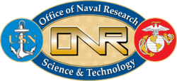
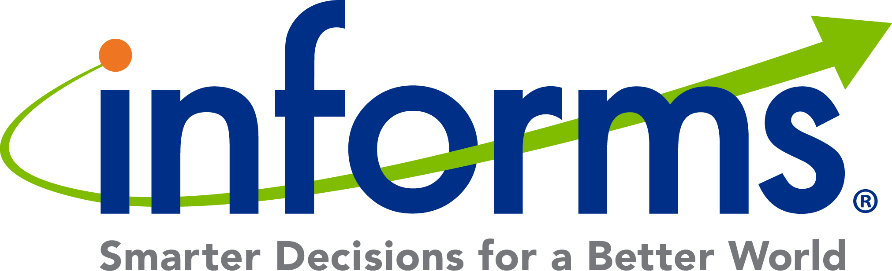
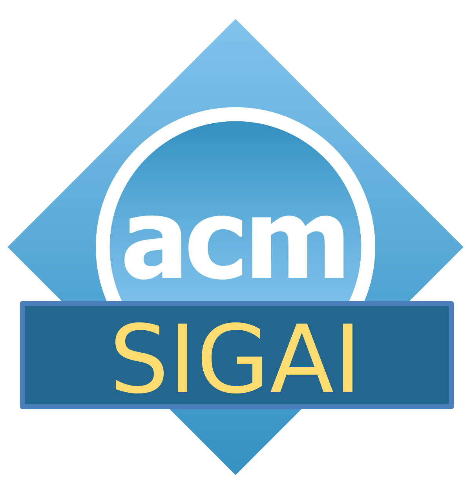

AI-SCORE 2026
The Artificial Intelligence School for Computer Science and Operations Research Education
Chicago, Illinois, May 18 - May 22
Illini Center, UIUC Chicago Campus
200 S Wacker Dr 20th floor, Chicago IL



The operations research (OR) and computer science (CS) communities have been increasingly cross-fertilizing their respective strengths in developing foundational methodological and computational tools for artificial intelligence (AI) – enabling decision-making in a broad range of use-inspired problem domains, striving to reach the full latent potential of efforts in individual fields. Combining CS capabilities that can exploit massive data-driven methods with OR models that can capture salient features of complex systems can unluck large gains in efficiency, practicality, interpretability, trustworthiness, and fairness in decision-making.
Professional communities in both fields – namely, INFORMS representing OR researchers and ACM SIGAI, representing CS researchers – convened in workshops funded by the Computing Research Association’s Computing Community Consortium. This inspired the formation of a dedicated “School” to (i) train the next generation to be dually conversant in both OR and CS methodological traditions, and (ii) pose challenge problems that are positioned to excite researchers across the CS-OR spectrum. We are grateful to the organizers of the CCC Workshops, to INFORMS, and SIGAI for the inspiration.
This is the second iteration of the AI-SCORE school (see sponsors above). The previous iteration can be found here.
The modules will be jointly created thematic tutorials accompanied by curated datasets and exercises involving hands-on participation by students in cross-disciplinary teams.
Please apply at the Google form here. The deadline to submit is April 17 at 5pm EST. Notifications will be sent by April 20. The form will request the student’s CV, a short statement (maximum one page) describing the problem area at the intersection of OR and CS/AI being explored by the student as a Ph.D. topic; and a very short statement (maximum one page) from the Ph.D. advisor confirming the student is currenlty a first or second year, the student's research area is in OR/AI, and the anticipated benefit (maximum one page).
Application deadline: April 17 5pm EST, 2026. Late submissions will be accepted until April 19, 3pm EST. Notifications will be sent by April 20.
Housing: Five nights provided for FREE Sunday-Friday to students. Rooms will be in suites that consist of two individual bedrooms, with a shared bathroom between them. (Link)
Housing Address: 940 West Harrison Street, Chicago, IL 60607
Meals: Monday - Friday: breakfast + lunch is provided, plus dinners 2-3 nights provided
Transportation and other expenses: reimbursed for up to $350
School Venue: Illini Center